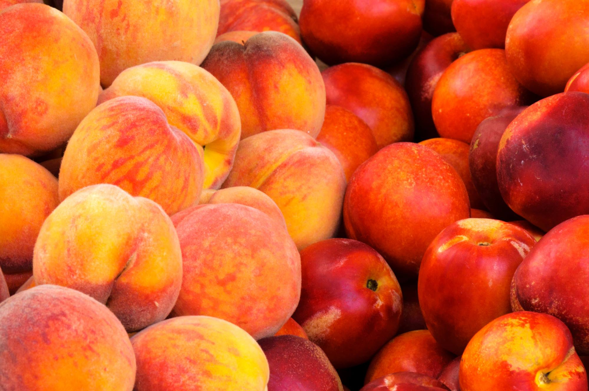

ჩვენი ორგანიზმის სრულფასოვანი ფუნქციონირებისთვის აუცილებელი კომპონენტები ძირითადად ხილსა და ბოსტნეულშია, სწორედ ამიტომ ხშირად მივირთმევთ მათ.
მიუხედავად იმისა, რომ ბევრი რამ იცით ვაშლის, სტაფილოს, საზამთროსა და სხვა ხილ-ბოსტნეულის შესახებ, არსებობს უამრავი საინტერესო ფაქტი მათ შესახებ, რაც დიდი შანსია, რომ აქამდე სულაც არ იცოდით.
და აი, ისინიც:
1. მარილის დამატებით, ანანასი გაცილებით ტკბილი ხდება
ეს ხერხი ნამდვილად ამართლებს. მარილი ანანასის სიმწარეს ანეიტრალებს. თუმცა, ალბათ აქამდეც გინახავთ, თუ როგორ აყრიან დასატკბობად ნესვს მარილს.
2. სოკოებს გენეტიკურად ადამიანებთან უფრო მეტი საერთო აქვთ, ვიდრე ბოსტნეულთან
აღსანიშნავია, რომ ასევე ადამიანის დნმ ბანანისას დაახლოებით 60%-ით ემთხვევა.
3. საზამთროს შეჭმა მთლიანად შეგიძლიათ
განსაკუთრებულად სასარგებლოა საზამთროს ქერქი.

4. არსებობს ხე, რომელიც რამდენიმე სახეობის ხილს ისხამს
შესაბამისად, შეგიძლიათ იყიდოთ ერთი ხე და ეზოში ლიმონის, ფორთოხლისა და ლაიმის მოსავალიც გექნებათ.
5. მსოფლიოში ყველაზე მბზინავი კენკრა აფრიკაში იზრდება
მეცნიერების აზრით კენკრა თავისი კაშკაშა და ლამაზი ფერით ჩიტებს იზიდავს,
გადამუშავებული თესლით კი მცენარე სრულიად სხვა ტერიტორიაზეც ახერხებს გამრავლებას.
6. სტაფილო სულაც არ არის სასარგებლო კურდღლებისთვის
მეტიც, სტაფილომ შეიძლება კურდღელს მომნელებელი სისტემა, ან კბილები დაუზიანოს.
7. ატამი და ვაშლატამა ერთი და იგივე ხილია
სხვაობა მხოლოდ ის არის, რომ ატამს ბუსუსები აქვს.

8. ალიასკაზე გიგანტური ზომის ხილ-ბოსტნეული იზრდება
ლოგიკურია, ხშირად დღის განმავლობაში იქ ხომ 20 საათი არ ღამდება.
9. კარტოფილის მცენარე ზოგჯერ შხამიან ხილსაც ისხამს
ეს შხამიანი ხილი ძალიან ჰგავს პომიდორს,
რადგან კარტოფილი და პომიდორი ერთი ოჯახის, ძაღლყურძენასებრნის წარმომადგენლები არიან.
10. დღეში თუ თითო სახეობის ვაშლს შეჭამთ, ყველა სახეობის გასასინჯად 20 წელი დაგჭირდებათ
მსოფლიოში ხომ ვაშლის 7,500 სახეობა არსებობს.
კომენტარები
კომენტარები